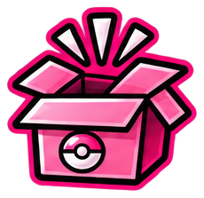

Producten & reviews
Van binders en accessoires tot Pokémon- en TCG-producten. Een product uitproberen, laten zien of er mijn ervaring over delen? Leuk! Ik blijf wel eerlijk over wat ik ervan vind.
Hoi! Ik ben de Pokémonfan achter PinkBulbTCG. Op mijn website en Instagram deel ik mijn liefde voor Pokémon TCG, kaarten verzamelen, binders, events en alles daaromheen. Lijkt het je leuk om samen iets te doen? Ik sta open voor ideeën die bij mijn hobby en volgers passen!

Van binders en accessoires tot Pokémon- en TCG-producten. Een product uitproberen, laten zien of er mijn ervaring over delen? Leuk! Ik blijf wel eerlijk over wat ik ervan vind.
Heb je een webshop, merk, evenement of community die bij Pokémon en TCG past? Misschien kunnen we iets leuks bedenken voor de website of Instagram.
Wil je PinkBulbTCG ondersteunen met een samenwerking, affiliateprogramma of sponsoring? Stuur gerust je voorstel. Ik kijk graag of het aansluit bij mijn hobby en doelgroep.
Vind je mijn content leuk en wil je PinkBulbTCG vrijwillig steunen? Via Ko-fi kun je een kleine bijdrage doen. Natuurlijk hoeft dat helemaal niet!
💗 Support via Ko-fi →Stuur me een DM op Instagram met wie je bent, wat je in gedachten hebt en wat je graag samen wilt doen. Dan kijk ik of het bij PinkBulbTCG past!
Contact via Instagram →Transparantie: Op PinkBulbTCG kunnen affiliate-links en samenwerkingen voorkomen. Als ik via een link een commissie kan ontvangen of een product gesponsord is, vermeld ik dat duidelijk. Mijn ervaringen en meningen blijven van mijzelf.